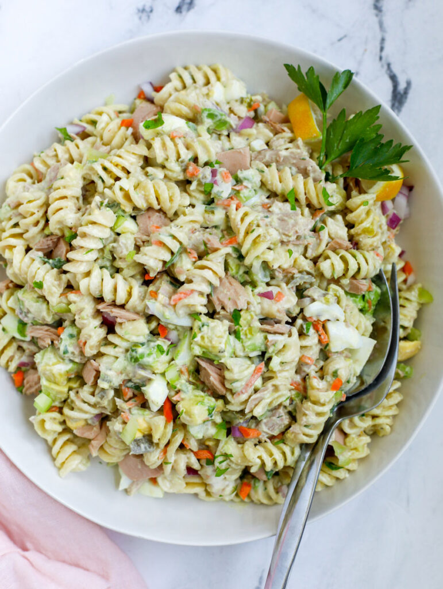

Tuna Scroodle

Description
This is a variation on the Tuna Skroodle found in Souper Salad. Delightful as a main dish, side dish, or snack with a tiny scoop.
Ingredients
- 1 can Tuna (in water), drained
- 1/2 cup Red Onion, chopped
- 1/4 cup Green Onion, thinly chopped
- 3 Tablespoons of Kraft Mayonnaise with Olive Oil
- 2 tsp Black Pepper
- 2 tsp Garlic Powder
- 1 dash of Salt (optional)
- 1/2 box (@ 3.5 oz) of Ronzoni Smart Taste Rotini
Steps
- Boil pasta for time to your taste (7-12 mins).
- Drain and rinse with cold water.
- While pasta is boiling, in a large bowl combine: tuna (drained), green and red onions, pepper, garlic powder, salt and mayo. Stir to blend well. Once pasta cools, add pasta and toss to coat.